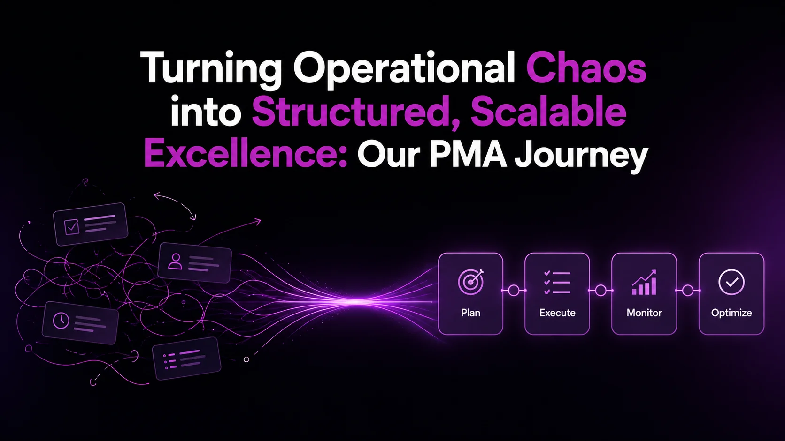

How a small operational function grew into the strategic backbone of YOUGotaGift — driving structure, efficiency, and innovation across the entire organisation.

In the early days of YOUGotaGift, the team was small, and everything felt manageable. With fewer employees and simpler workflows, teams handled tasks, communication, and tracking independently without much difficulty. Processes were informal, but they worked — because the scale allowed it.
But as the company began to grow, things started to change. New team members joined, projects expanded, and operations became increasingly complex. What once worked informally was no longer sufficient. There was no standardised approach to communication, task management, or tracking. Work began to scatter, updates became inconsistent, and visibility across teams started to fade.
Important notifications were missed. Coordination became more challenging. Small gaps gradually turned into larger operational issues.
To address this, our CTO and team introduced Jira on a trial basis. What started as a simple experiment quickly revealed something bigger — Jira was far more powerful than expected. As adoption grew, it became clear that managing such a robust system, along with other tools, required dedicated ownership. It was no longer something a single person could handle.
At that point, a key realisation emerged: managing tools alone wasn't enough. What the organisation truly needed was structured processes, centralised management, and continuous improvement.
That realisation led to the formation of a dedicated team — the PMA Team (Project Management Application Administrators). A team built not just to manage tools, but to standardise processes, eliminate manual inefficiencies across the organisation, and enable engineers to focus on what truly matters.
What initially seemed like small operational gaps were, in reality, early signs of growing complexity. And the PMA team became the force that transformed that complexity into clarity.
Before structured systems were in place, work lacked consistency and clarity. Tasks were not properly tracked, communication was fragmented, and processes were either unclear or undocumented.
That's where the PMA team began. We started by organising Jira for the tech teams — bringing visibility and structure to task tracking across products. At the same time, we streamlined Slack by creating structured channels, defining naming conventions, and enabling alert mechanisms to ensure communication was timely and reliable.
To unify everything, we documented every process in Confluence and shared it across teams — creating a centralised knowledge base and a single source of truth for workflows and best practices.
GitHub, as our core code management platform, was also structured and governed effectively. We ensured proper access control, removed inactive or unauthorised users, and aligned repository management with team needs — acting as a security and governance layer for code collaboration.
We defined and implemented processes and rules aligned with company standards for all PMA-managed applications, ensuring consistency, governance, and strict adherence across teams in their day-to-day operations.
This marked the shift: from unstructured execution to a well-defined, process-driven system.
Aligned with our CTO's vision, the PMA team introduced Agile methodology within the tech organisation. The goal was to enable clear tracking and monitoring of work, better visibility into progress, and measurable understanding of team performance and delivery.
We explored and implemented Sprint-based execution, including sprint planning and structuring, tracking and monitoring mechanisms, and continuous delivery and iterative improvement.
Through continuous refinement and collaboration, we successfully stabilised Agile practices within the organisation. As the process matured, the responsibility of managing Agile operations was transitioned to the PMO (Project Management Officers) team — allowing PMA to expand its focus toward broader organisational impact.
Based on feedback from PMO and Tech Managers, the PMA team continued to enhance and refine processes, ensuring continuous improvement.
As part of strengthening operational workflows, the PMA team introduced Jira Service Management (JSM) to streamline both customer and internal request handling. We designed and structured the YOUGotaGift ticketing system by creating dedicated service portals for each product support team, ensuring every request is routed to the appropriate team from the outset.
With product-specific ticketing portals in place, we achieved:
We also introduced alert mechanisms for escalated requests and requests not closed within 3 days of creation. These enhancements enable proactive request tracking and help reduce customer dissatisfaction.
With a strong process foundation in place, the PMA team began to expand both its ecosystem and its influence across the organisation. What started as operational support gradually evolved into a more strategic function — one that not only managed tools but shaped how teams worked through them.
At the core of our ecosystem were a set of essential platforms:
As the organisation grew, we expanded our ownership to include additional tools such as Figma, Apidog, and others. But our role went far beyond tool administration. We focused on designing how work flows through these tools, ensuring each system contributed to a seamless workflow rather than operating in isolation.
One of our key initiatives was extending Confluence beyond an internal documentation platform. We transformed it into a customer-facing Guides Portal, enabling structured, accessible documentation for external users. This not only improved internal alignment but also increased transparency and trust with our customers.
As our systems, tools, and teams grew, so did the complexity of managing them. Under the guidance of our CTO, the PMA team shifted focus toward a clear goal: reduce manual effort, eliminate gaps, and create a more intelligent, self-sustaining operational ecosystem through automation and integrations.
We started by identifying friction points — missed updates, scattered information, repetitive tasks — and asked a simple question: What if this didn't have to be manual at all?
From there, we built systems that ensured:
To bring this vision to life, we implemented advanced automations that reduced repetitive manual work, robust task tracking and monitoring systems, and cross-platform integrations that connected our tools into a cohesive ecosystem.
One of the most impactful areas of transformation was Slack. We didn't just use Slack — we redesigned how it worked for us. We built a comprehensive alerting ecosystem within Slack, ensuring that key events across tools — whether from Jira, GitHub, or other platforms — were automatically surfaced in the right channels. This turned Slack into a real-time operational dashboard rather than just a messaging platform.
As our systems scaled and our platform footprint expanded, reliability became non-negotiable. With increasing traffic, integrations, and dependencies, even minor disruptions had the potential to create significant impact. This made high uptime, rapid response, and clear coordination critical pillars of our operations.
To address this, the PMA team introduced a structured incident management framework, designed to bring clarity, speed, and accountability to how incidents are handled across the organisation. A key part of this evolution was the implementation of Statuspage, which enhanced visibility both internally and externally — keeping teams aligned and stakeholders informed in real time.
We focused on creating a system where incidents are not just reacted to, but detected, communicated, and managed seamlessly from the moment they arise:
Beyond systems and automation, we recognised that reliability also depends on human readiness. The PMA team provides 24/7 incident support, ensuring that there is always someone available to step in, coordinate, and support affected teams — regardless of when an issue occurs.
Before these improvements, incident handling could be fragmented — updates scattered, ownership unclear, and response times inconsistent. By introducing structure, automation, and clear communication pathways, we transformed incident management into a well-orchestrated process. Today, disruptions on the YOUGotaGift platform are quickly identified, clearly communicated, and efficiently resolved.
Over time, the PMA team evolved into a centralised governance and enablement function. We serve as the centralised administrators of all project management applications across the organisation, ensuring consistency, control, and scalability.
We took ownership of user access and permission management, application security and compliance, centralised administration across departments, and standardisation of tools and processes.
We also became responsible for announcing new features and updates, introducing new technologies across teams, and supporting teams in adoption and optimisation. Additionally, we defined structured processes for innovation and knowledge sharing, ensuring ideas are explored systematically, knowledge is shared across teams, and innovation becomes scalable and repeatable.
As our ecosystem of tools and platforms continued to grow, so did the complexity of managing them — not just operationally, but financially. Recognising this, the PMA team expanded its scope to include financial governance and cost optimisation, ensuring that every tool in use delivers measurable value to the organisation.
We took ownership of monitoring and managing application-related expenses across departments. Our responsibilities included:
Instead of individual teams independently purchasing tools, we established a controlled process where all application requests are evaluated, managed, and procured centrally. This ensures every new tool aligns with organisational needs, integrates well within the existing ecosystem, meets security and compliance standards, and is cost-effective and scalable.
One of the major challenges in growing organisations is the emergence of duplicate tools and "shadow IT." Through our governance model, we were able to prevent duplicate purchases by identifying overlaps early, ensure every application in use is visible and governed, and maintain centralised visibility of the entire tool ecosystem.
Financial governance is not just about reducing costs — it's about maximising value. By aligning spending with actual usage and business needs, we ensure that every investment contributes meaningfully to the organisation's goals. Costs are optimised without compromising capability, investments are intentional and measurable, and the organisation scales sustainably without unnecessary overhead.
As the organisation matured, so did the role of the PMA team. What began as managing tools and optimising workflows gradually evolved into something more impactful — building solutions ourselves. Aligned with our CTO's vision, we transitioned from being application administrators to becoming active contributors in application development, leveraging AI and modern engineering practices to solve real business problems.
This shift wasn't just about adopting new technology — it was about rethinking how we approach challenges. Instead of asking "Which tool should we use?", we started asking "Should we build this ourselves?"
We began exploring how AI-driven development could help us move faster, reduce manual effort, and create more tailored solutions. This led to the development of several custom internal applications, designed specifically around our workflows and operational needs. These weren't experimental projects — they were practical, production-ready tools that addressed gaps we had previously worked around using third-party platforms.
By building our own solutions, we have:
Beyond systems and processes, the PMA team placed a strong emphasis on fostering a culture of continuous learning and shared knowledge across the organisation. In a growing tech environment, knowledge can easily become siloed. To address this, we focused on creating awareness and enabling teams to stay aligned with evolving tools and practices.
We ensured knowledge is shared across departments, teams stay informed about new technologies, and adoption of AI and upskilling is encouraged — helping teams build future-ready capabilities.
Over time, this has contributed to a cultural shift — where learning is no longer a separate activity, but a natural part of everyday work. This has created an environment where teams continuously explore, improve, and adapt, making learning and innovation an ongoing, shared responsibility.
What started as a small operational function has grown into a strategic backbone of YOUGotaGift — driving structure, efficiency, and innovation across the organisation. Today, we operate at the intersection of process, technology, and enablement, ensuring that the organisation runs smoothly, efficiently, and with clarity.
We've built an ecosystem where:
We don't just manage platforms — we design workflows, enable teams, optimise costs, drive automation, and build solutions. We bring order to complexity, clarity to chaos, and momentum to teams.
This is not just a story of operational maturity — it's a story of transformation. And we're just getting started.
With AI, automation, and continuous innovation shaping what comes next, the PMA team will continue to evolve — building smarter systems, enabling faster teams, and driving greater impact across the organisation.